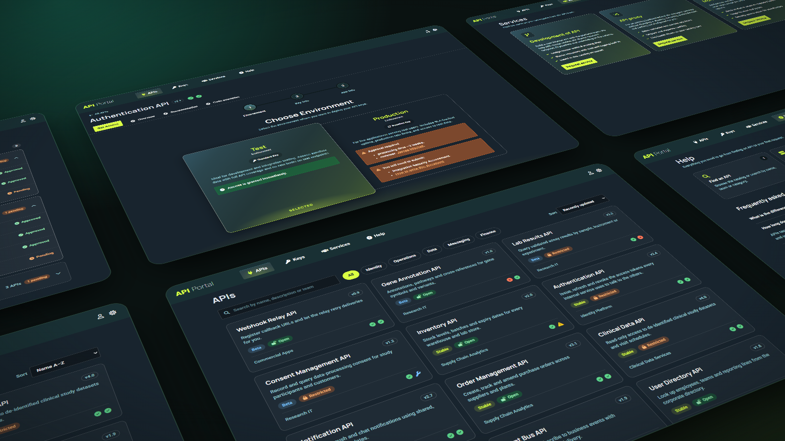

Two API catalogs, nearly identical — except one was test and one was production, and developers kept switching between them without realizing it. NPS went from -20 to 60.

Open the clickable prototype →The portal is where developers discover internal APIs, understand how to consume them, and request access keys. When I joined, there were two separate portal instances — one for test APIs, one for production. They were connected but distinct, and users switched environments without realising it.
The business wanted to merge them, but feared users would confuse test and production access workflows. I inherited some early outputs from a previous designer, ran my own interviews with sketches, and the research confirmed the direction: one unified portal. I designed it from scratch.
Rather than discrete research sprints, I ran 2–4 user interviews per week, continuously — roughly 200 hours of interviews in the first nine months alone. Sessions tracked the design as it evolved, from paper-level sketches to high-fidelity screens. Every major decision had user evidence behind it before development started.
I also built the measurement infrastructure myself: Google Tag Manager, Google Analytics event tracking, Looker Studio dashboards, and in-context satisfaction prompts after key actions. The team moved from assumption-based to evidence-based decisions — and that analytics work directly triggered several of the improvements below.
Users complained that requesting an API key felt unnecessarily complex — "it should be one click." Instead of just compressing the form, I audited it from both sides: what users fill in, and how access reviewers actually use each field.
The combination — fewer fields, clearer labels — made the workflow nine times faster to complete.
A year-end survey surfaced a wave of complaints about approval times. Ticket analysis showed the median approval took about two weeks; users expected immediate access, or two days at most. Part of the problem was genuinely procedural — but a bigger part was that requestors needed to complete eligibility steps they never learned about, because that information lived in a tab they never visited.
I redesigned the request into a three-step flow, with the environment choice up front and the approval timeline and required preparation shown inline — before submitting, not after.
I was confident the redesign solved the problem. I ran a usability study anyway. Round one: almost nobody noticed the critical information, even highlighted in an orange box in the centre of the screen. The surrounding supplementary content created too much visual noise.
If users don't see something, the UI probably contains too much, not too little.
I stripped the step down to the essentials — environment, timeline, required actions — and validated again. This time users consistently noticed the approval requirement and understood the process, with no perceived increase in complexity. The fix cost a design iteration; caught after development, it would have cost a release cycle.
Analytics showed most search activity happened on the catalog page, while most homepage traffic skipped search entirely. With only ~200 APIs, the whole catalog could load client-side — so I converted search into live suggestions, auto-focused the homepage search input, and made any keystroke drop the user straight into the filtering catalog. Adding popularity sorting (by access keys requested) cut search effort by roughly 40%. Other teams started copying the pattern.
When I joined, the company had a brand manual — a logo and colours — and nothing else. I built a custom design system for the portal. Years later, when an official company-wide design system arrived, I ran a preference study comparing the two. Users clearly preferred the portal's design, and other teams were already copying it as an internal benchmark.
Early NPS tracking was unreliable — the survey fired too often, including at first-time visitors. Fixing the targeting rules alone moved NPS from 40 to 60. The lesson stuck with me: a metric jump can mean you fixed the product, or that you fixed the measurement. You need to know which.
The same thinking applied to the year-end survey email: applying the reciprocity principle — leading with something of value before the ask — roughly quadrupled response rates year over year.
This was an internal enterprise product under NDA, so the images and the clickable prototype use fictional data and a re-created interface, not the real portal. Happy to walk through the work and artefacts in more detail in person.
Jirka is the kind of designer every product team hopes to have: exceptionally talented, collaborative, and deeply invested in building products that users love. I wouldn't hesitate to recommend him to any team looking for a senior product designer who elevates everyone around him.
Working with Jirka over several years was one of the highlights of my time as a Product Manager. He's one of those rare designers who combines exceptional UX craft with a deep understanding of product and technology.
Our product was frequently praised for its intuitive user experience and polished design, and Jirka played a huge role in making that happen. He consistently brought customer insights into the product through user research and usability testing, helping us make better decisions and build experiences that genuinely worked for users.
What really sets Jirka apart, though, is his ability to bridge disciplines. He doesn't just design great experiences—he understands technical constraints, speaks engineers' language, and collaborates in a way that earns their trust and respect. As a Product Manager, I always knew I could rely on Jirka to deliver thoughtful, high-quality work while constructively challenging ideas to make the product better.